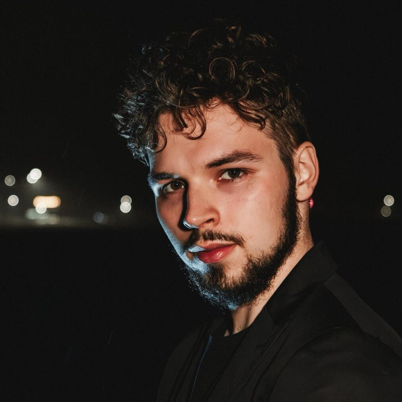

Storm Chasers’ car
Mobile field kit: GoPros, LiveU LU300S, ATEM Mini ISO, power, and LTE — managed end to end for live weather coverage.
Broadcast technology, media systems, and the tooling that keeps productions running.
Currently
Server admin for TV systems, plus day-to-day support across post-production and broadcasting in Brno.

Path
Česká televize · Brno
Television systems, servers, and operational support for post and broadcast.
Amsys · Brno
WordPress magazines, presentation sites, Notion/GitLab coordination, and a virtualization host.
360° media · Bratislava
Field & studio production, DaVinci training, IT for the news team, and building out servers and newsroom kit from scratch.
TV Markíza · Bratislava
News and social edits, live via TriCaster/vMix, then projects like outdoor TN Live cameras and the Storm Chasers car.
Selected work
A short list — broadcast builds, a newsroom launch, and a few tools I still ship under tojemoc.
Mobile field kit: GoPros, LiveU LU300S, ATEM Mini ISO, power, and LTE — managed end to end for live weather coverage.
Sony SRG-XB25 in outdoor chassis with Teradek SRT ingest for TN Live.
Equipment list, install, server design, editor workflows, and DaVinci training while the outlet got on its feet.
Loyalty wallet, VOD subscriptions, grocery tracking, Sofie/Caspar experiments — tjm.sk and github.com/tojemoc.
Toolkit
DaVinci Resolve Studio · camera ops · TriCaster / vMix · LiveU · Teradek · ATEM
Windows & Linux admin · Proxmox · TrueNAS · Ubiquiti · Cloudflare
WordPress · Git / GitHub Actions · Notion & GitLab project flow · a little Python
Also
Tournament ops and administration for a handful of Central European brands.
Contact
Best reached by email. Based in Brno — open to broadcast, systems, and product work that needs someone technical in the room.